Show R code
pacman::p_load(sf, spdep, tmap, ClustGeo, ggpubr, cluster,
factoextra, heatmaply, corrplot, tidyverse, GGally)
tmap_mode("plot")
theme_set(theme_minimal(base_size = 11))Bao Sihan
October 3, 2026
In this exercise, I group the townships of Shan State, Myanmar, using household access to information and communication technology (ICT). I first explore the 2014 census indicators, then compare hierarchical clustering, SKATER and ClustGeo. The main question is whether townships with similar ICT profiles also form useful geographical regions.
The analysis follows Chapter 12. Each section presents the main idea and its figures; the R code is available in the expandable blocks.
The supplied data contain Myanmar township boundaries and six household ICT indicators for Shan State. I use the 55 townships in Shan (East), Shan (North) and Shan (South). The boundary layer and census table are joined using the township code, rather than the township name.
All paths are relative to this exercise folder. I keep the boundary order throughout the analysis so that each cluster label returns to the correct township.
Raw ownership counts are affected by the number of households in a township. To compare access, I calculate the number of households owning each item per 1,000 households:
\[ \text{Penetration rate} = \frac{\text{Households with the ICT item}}{\text{Total households}}\times 1{,}000. \]
ict_derived <- ict %>%
rename(DT_PCODE = `District Pcode`, DT = `District Name`,
TS_PCODE = `Township Pcode`, TS = `Township Name`,
TT_HOUSEHOLDS = `Total households`, RADIO = Radio,
TV = Television, LLPHONE = `Land line phone`,
MPHONE = `Mobile phone`, COMPUTER = Computer,
INTERNET = `Internet at home`) %>%
mutate(RADIO_PR = RADIO / TT_HOUSEHOLDS * 1000,
TV_PR = TV / TT_HOUSEHOLDS * 1000,
LLPHONE_PR = LLPHONE / TT_HOUSEHOLDS * 1000,
MPHONE_PR = MPHONE / TT_HOUSEHOLDS * 1000,
COMPUTER_PR = COMPUTER / TT_HOUSEHOLDS * 1000,
INTERNET_PR = INTERNET / TT_HOUSEHOLDS * 1000)
rate_vars <- c("RADIO_PR", "TV_PR", "LLPHONE_PR", "MPHONE_PR",
"COMPUTER_PR", "INTERNET_PR")
rate_labels <- c(RADIO_PR = "Radio", TV_PR = "Television",
LLPHONE_PR = "Landline phone", MPHONE_PR = "Mobile phone",
COMPUTER_PR = "Computer", INTERNET_PR = "Internet at home")The data contain 55 townships with complete ICT indicators. Every township code matches a boundary polygon.
The first comparison uses radio ownership. The count describes how many households own a radio, while the rate describes how common radio ownership is within a township. The boxplots show the median, interquartile range and unusually high or low observations.
radio_count_hist <- ggplot(ict_derived, aes(RADIO)) +
geom_histogram(bins = 20, fill = "lightblue", colour = "white") +
labs(x = "Households owning a radio", y = "Townships")
radio_count_box <- ggplot(ict_derived, aes(x = RADIO, y = "")) +
geom_boxplot(fill = "lightblue") + labs(x = "Households owning a radio", y = NULL)
radio_rate_hist <- ggplot(ict_derived, aes(RADIO_PR)) +
geom_histogram(bins = 20, fill = "lightblue", colour = "white") +
labs(x = "Radio ownership per 1,000 households", y = "Townships")
radio_rate_box <- ggplot(ict_derived, aes(x = RADIO_PR, y = "")) +
geom_boxplot(fill = "lightblue") + labs(x = "Radio ownership per 1,000 households", y = NULL)
ggarrange(radio_count_hist, radio_rate_hist, radio_count_box, radio_rate_box,
ncol = 2, nrow = 2, heights = c(2, 1))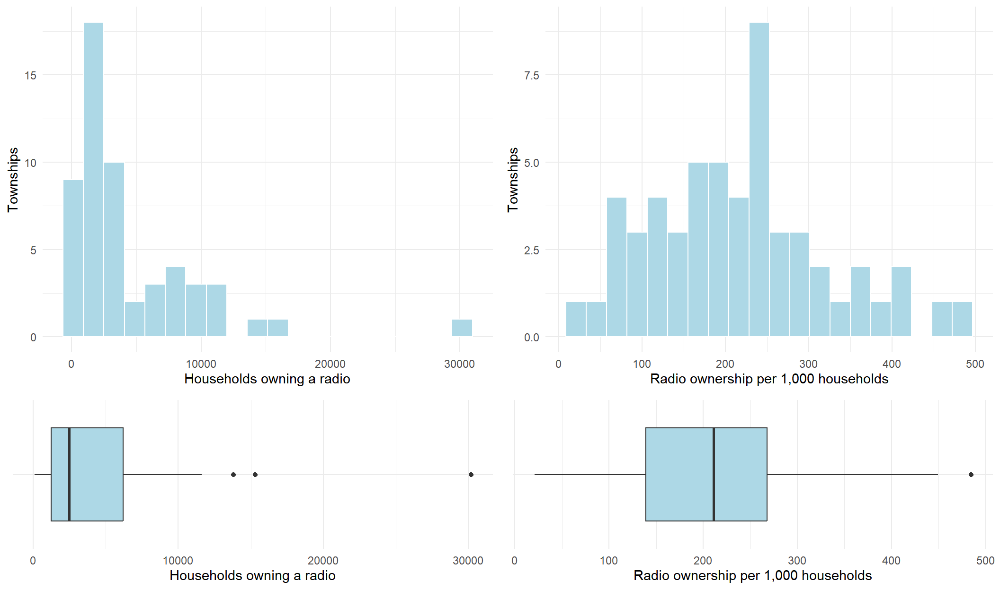
These histograms put the indicators on the same unit: households per 1,000. The horizontal ranges vary between panels so that the shape of each distribution remains visible.
ict_long <- ict_derived %>%
select(TS_PCODE, all_of(rate_vars)) %>%
pivot_longer(all_of(rate_vars), names_to = "Indicator", values_to = "Rate")
ggplot(ict_long, aes(Rate)) +
geom_histogram(bins = 20, fill = "lightblue", colour = "white") +
facet_wrap(~ factor(Indicator, levels = rate_vars), scales = "free_x", ncol = 3,
labeller = as_labeller(rate_labels)) +
labs(x = "Households per 1,000", y = "Townships")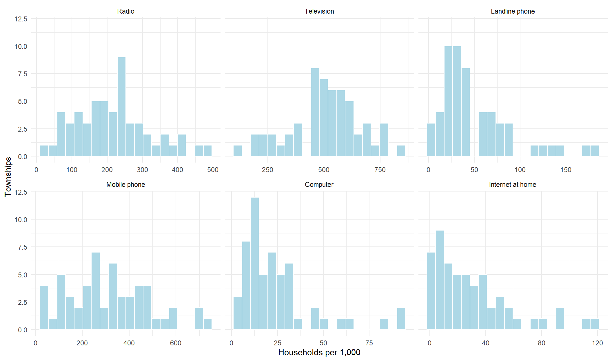
shan_sf <- left_join(
shan_sf,
ict_derived %>% select(TS_PCODE, TT_HOUSEHOLDS, RADIO, TV, LLPHONE,
MPHONE, COMPUTER, INTERNET, all_of(rate_vars)),
by = "TS_PCODE")
dir.create("data/rds", recursive = TRUE, showWarnings = FALSE)
write_rds(shan_sf, "data/rds/shan_sf.rds")
shan_sf <- read_rds("data/rds/shan_sf.rds")I use five Jenks classes to show variation within each variable. Each map has its own legend, so matching colours across different variables do not represent the same quantity.
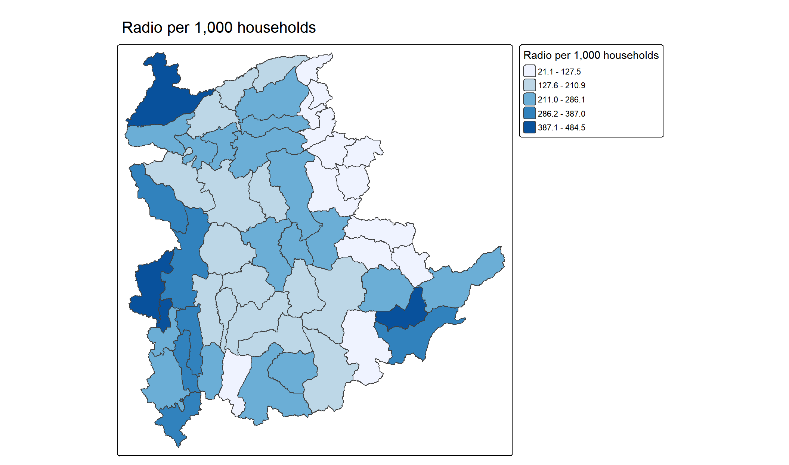
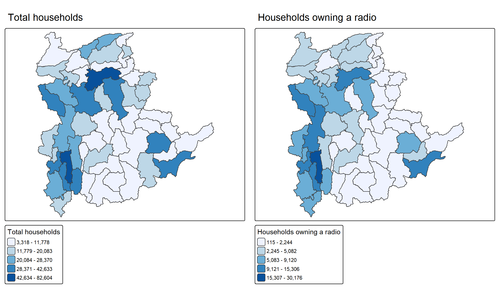
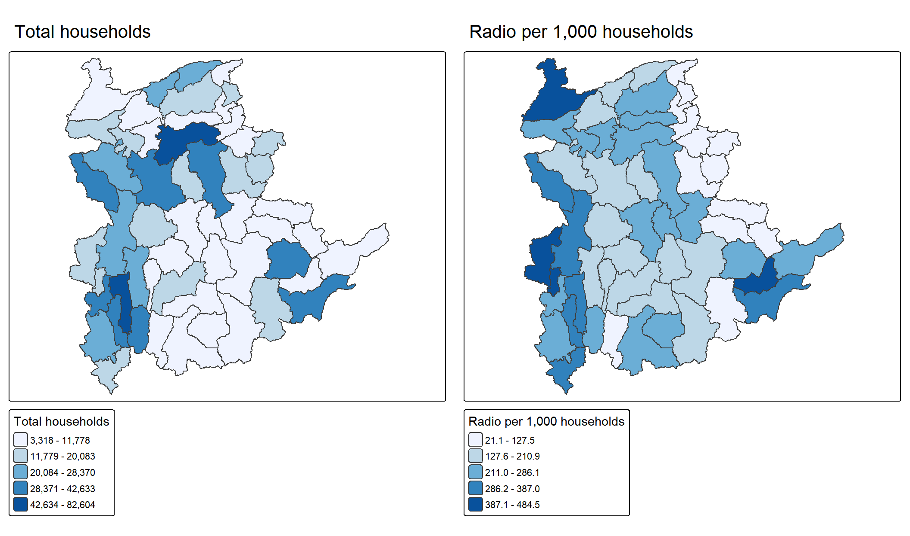
The rate map answers a different question from the count map. A large number of radio-owning households can reflect township size, while a high penetration rate means radio ownership is common among its households.
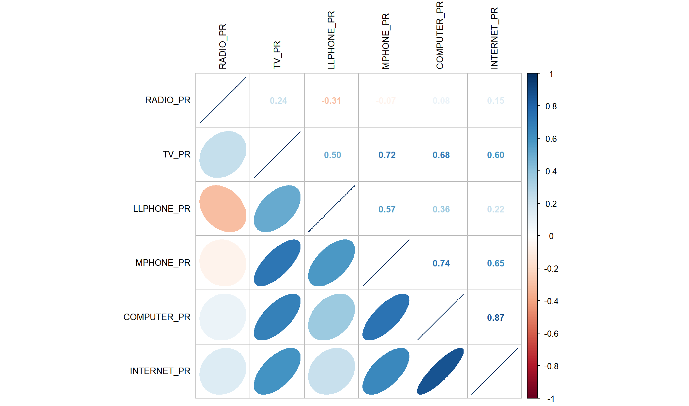
Computer ownership and home internet access have a correlation of 0.87. Following the chapter, I retain computer ownership and omit internet access from the clustering inputs to reduce the repeated influence of closely related indicators.
The five inputs are radio, television, landline phone, mobile phone and computer penetration rates. Township names label the rows, and township codes retain the link to the polygons.
Min-max standardisation puts each variable between zero and one. Z-score standardisation expresses a value relative to its variable’s mean and standard deviation; it does not require the original observations to be normally distributed. Neither transformation removes skewness.
shan_ict_std <- heatmaply::normalize(shan_ict)
shan_ict_z <- scale(shan_ict)
standardisation <- tibble(
`Raw rate` = shan_ict$RADIO_PR,
`Min-max` = shan_ict_std$RADIO_PR,
`Z-score` = shan_ict_z[, "RADIO_PR"]) %>%
pivot_longer(everything(), names_to = "Scale", values_to = "Value") %>%
mutate(Scale = factor(Scale, levels = c("Raw rate", "Min-max", "Z-score")))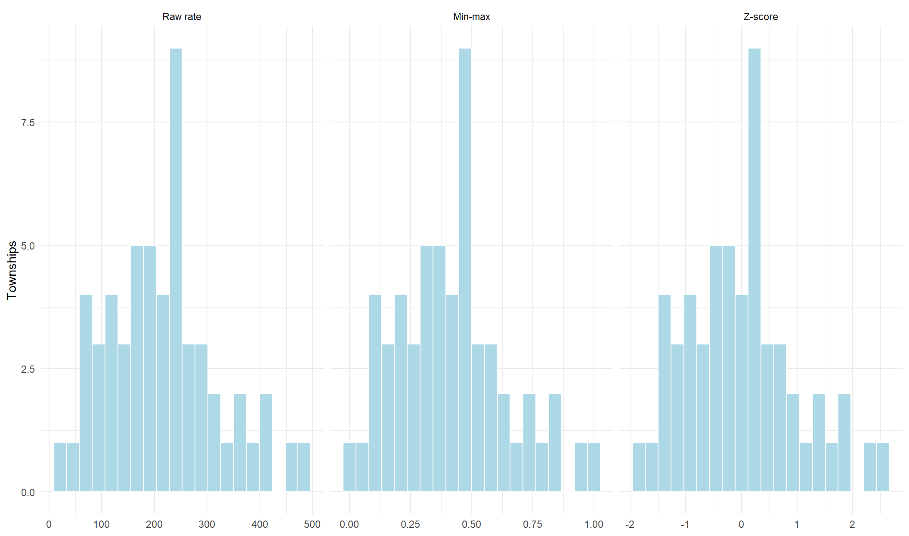
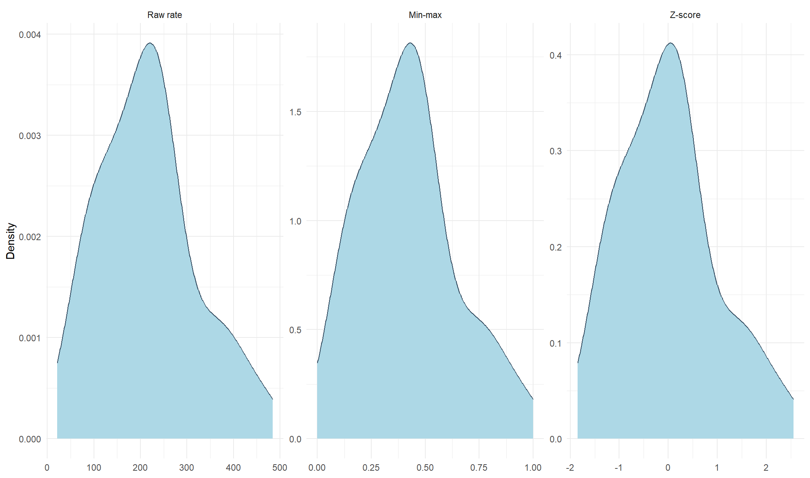
The chapter demonstrates both transformations but uses the unscaled penetration rates for its main clustering models. I keep that choice here. The variables share a unit, although those with larger variation can have more influence on Euclidean distances.
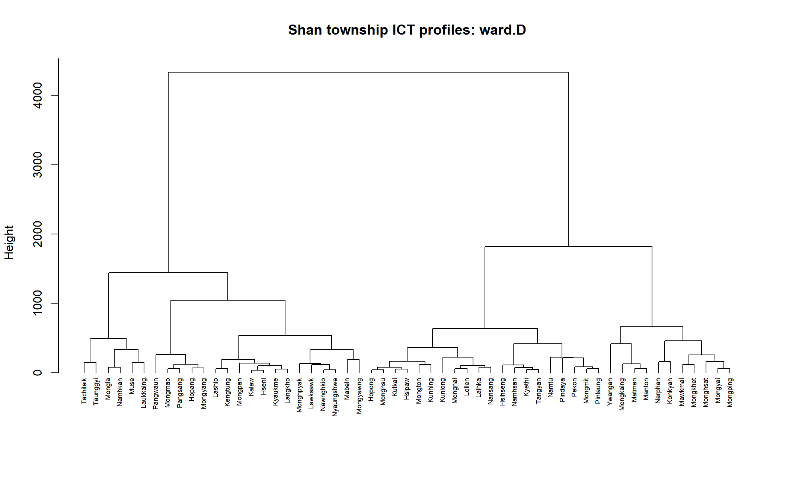
I compare the agglomerative coefficients from agnes(). A larger coefficient indicates a stronger clustering structure under that linkage rule; it does not by itself establish the best geographical partition.
linkage_methods <- c("average", "single", "complete", "ward")
linkage_scores <- tibble(
Method = linkage_methods,
Coefficient = map_dbl(linkage_methods, ~ agnes(shan_ict, method = .x)$ac))
ggplot(linkage_scores, aes(reorder(Method, Coefficient), Coefficient)) +
geom_col(fill = "#4c8da8", width = 0.65) +
geom_text(aes(label = sprintf("%.3f", Coefficient)), hjust = -0.15) +
coord_flip() + scale_y_continuous(limits = c(0, 1.04)) +
labs(x = NULL, y = "Agglomerative coefficient")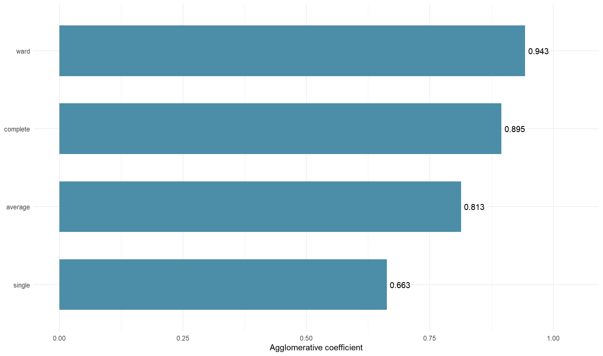
The largest coefficient is 0.943 for ward linkage.
I compute the gap statistic for up to ten groups using 50 reference simulations and seed 12345. As in the chapter, this diagnostic uses hcut() with its ward.D2 default, while the earlier example uses ward.D.
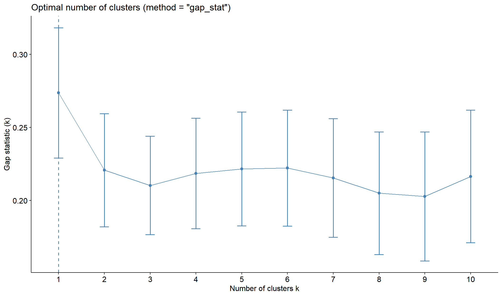
The first-local-maximum rule selects a cluster count of 1. I retain six groups for the following maps, as the chapter does, to compare the clustering approaches. Six is therefore a comparison setting, rather than the formal optimum from this rule.
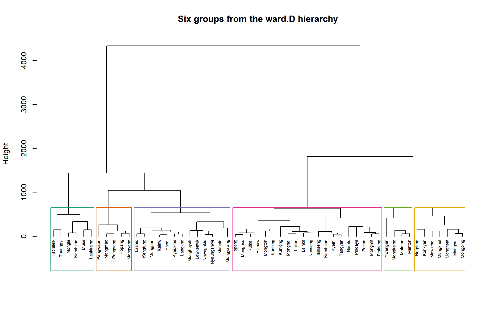
The heatmap uses min-max scaled rates so that differences within each indicator are easier to see. Its row hierarchy is fitted to these scaled values, so its six row groups need not match the raw-rate hierarchy shown above. Hover over a cell to inspect it. On a narrow screen, scroll horizontally to see the full chart.
heatmaply(as.matrix(shan_ict_std), Colv = NA,
height = 950,
dist_method = "euclidean", hclust_method = "ward.D",
seriate = "OLO", k_row = 6,
colors = colorRampPalette(c("#f7fbff", "#08306b")),
margins = c(65, 150, 55, 15), fontsize_row = 9, fontsize_col = 11,
main = "Shan ICT profiles: min-max scaled rates",
xlab = "ICT indicators", ylab = "Townships")shan_sf_cluster <- shan_sf %>%
mutate(CLUSTER = factor(cutree(hclust_ward, k = 6)))
cluster_map <- function(data, variable, title) {
tm_shape(data) +
tm_polygons(fill = variable,
fill.scale = tm_scale_categorical(values = cluster_colours),
fill.legend = tm_legend(title = "Cluster")) +
tm_borders() + tm_title(title)
}
hierarchical_map <- cluster_map(shan_sf_cluster, "CLUSTER", "Hierarchical clusters")
hierarchical_map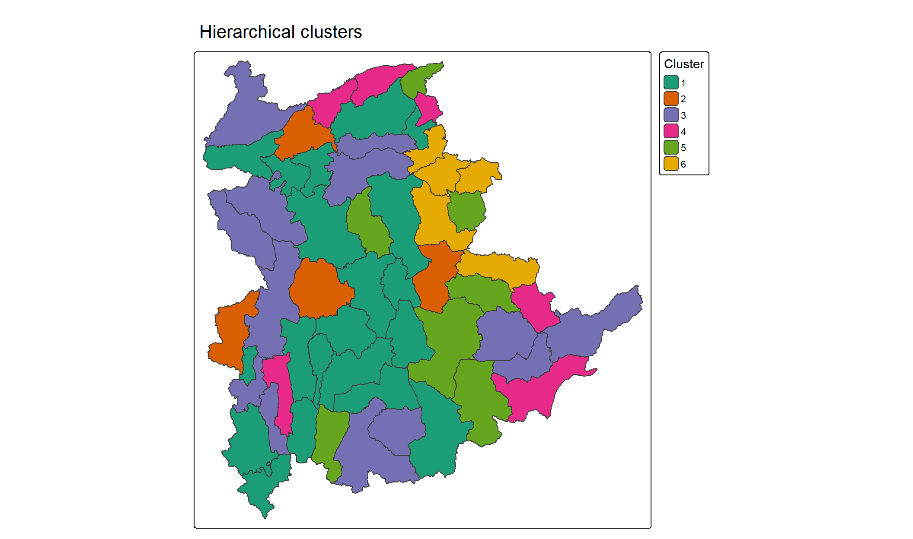
This model uses ICT similarity without a spatial constraint. Townships with similar profiles can therefore share a group even when they are separated geographically.
SKATER starts with a graph of neighbouring townships. I use Queen contiguity, which accepts either a shared boundary edge or a shared vertex.
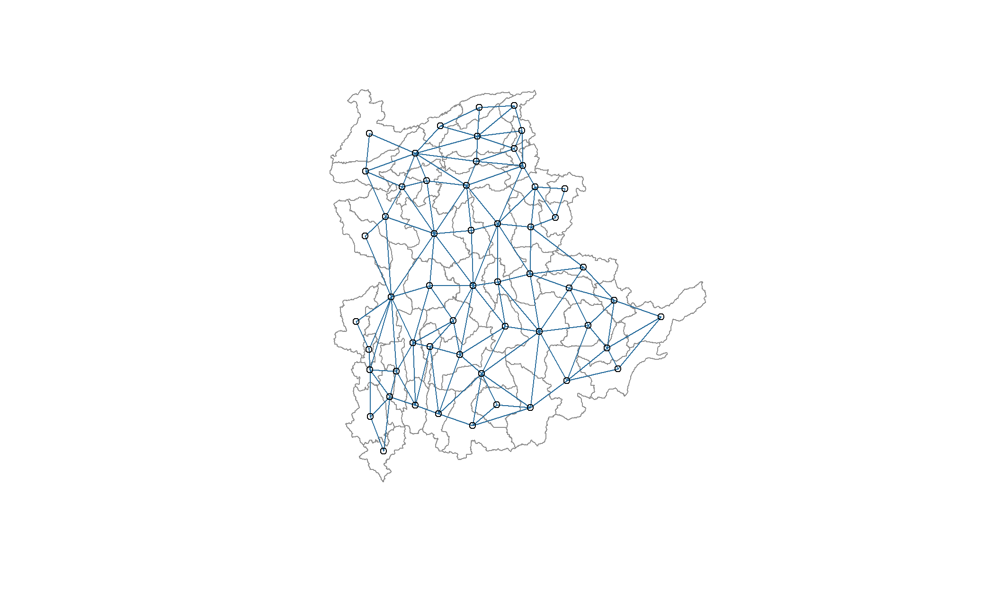
The graph has 55 townships and 264 directed neighbour links. All townships belong to one connected component, allowing a spanning tree to cover the whole study area.
Each neighbour link receives a cost based on the difference between the two townships’ five ICT rates. The minimum spanning tree connects all townships while minimising the total edge cost. I retain the original costs with style = "B".
lcosts <- nbcosts(shan_nb, shan_ict)
shan_w <- nb2listw(shan_nb, glist = lcosts, style = "B")
shan_mst <- mstree(shan_w, ini = 1)
plot(st_geometry(shan_sf), border = "grey55")
segments(coords[shan_mst[, 1], 1], coords[shan_mst[, 1], 2],
coords[shan_mst[, 2], 1], coords[shan_mst[, 2], 2],
col = "#246a9b", lwd = 1.2)
points(coords, pch = 16, cex = 0.45, col = "#246a9b")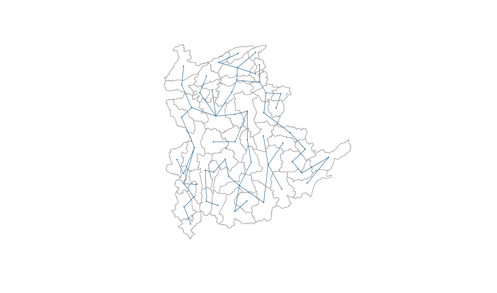
Five cuts produce six groups. Since SKATER removes edges from the neighbour tree, each resulting group remains connected through the original Queen graph.
clust6 <- spdep::skater(edges = shan_mst[, 1:2], data = shan_ict,
method = "euclidean", ncuts = 5)
plot(st_geometry(shan_sf), border = "grey55")
kept_edges <- shan_mst[
clust6$groups[shan_mst[, 1]] == clust6$groups[shan_mst[, 2]], 1:2]
segments(coords[kept_edges[, 1], 1], coords[kept_edges[, 1], 2],
coords[kept_edges[, 2], 1], coords[kept_edges[, 2], 2],
col = cluster_colours[clust6$groups[kept_edges[, 1]]], lwd = 1.5)
points(coords, pch = 16, cex = 0.5, col = cluster_colours[clust6$groups])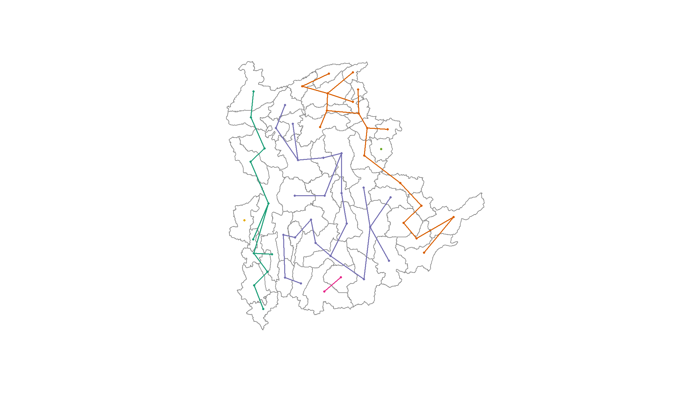
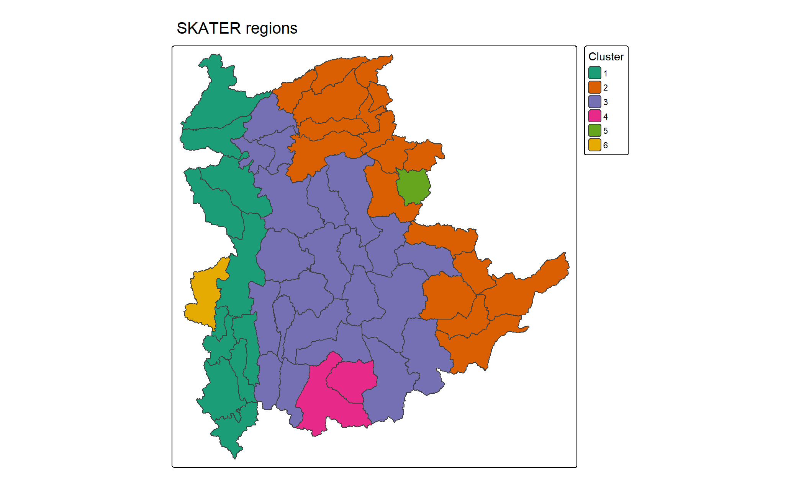
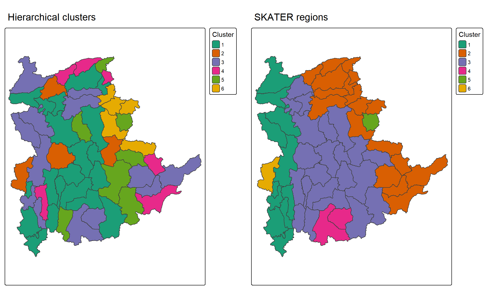
The SKATER groups contain between 1 and 22 townships. The spatial constraint creates connected regions, but it does not require equally sized groups. A cluster number or colour in one method does not identify the same group in another.
ClustGeo first provides a Ward-like hierarchy based on the ICT distance matrix alone. This gives a baseline before geographical distance is introduced.
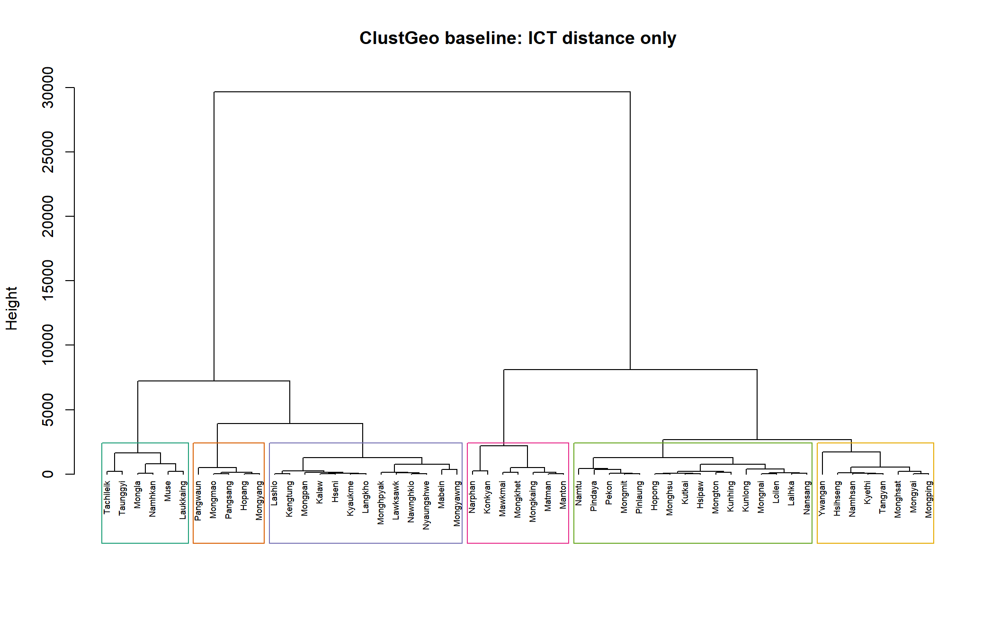
ClustGeo combines the ICT distance matrix with distances between township polygons. Touching polygons have zero separation in the latter matrix. The mixing parameter \(\alpha\) controls the influence of geography: zero uses ICT distance alone, while one uses geographical distance alone.
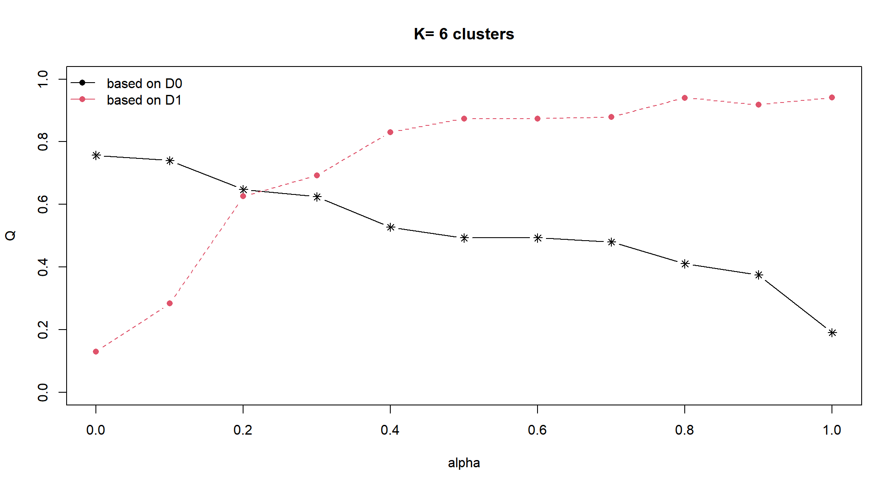
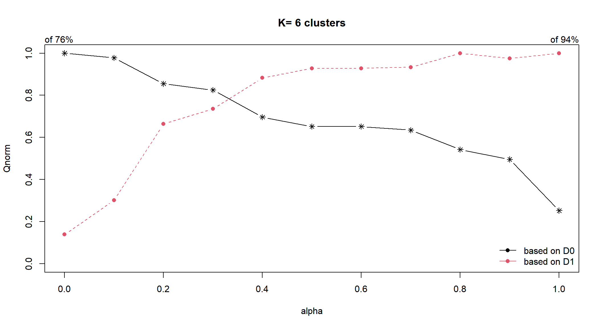
Following the chapter, I choose \(\alpha=0.2\) as a compromise that adds geographical cohesion while retaining emphasis on ICT similarity. This is a soft distance constraint: unlike SKATER, it does not guarantee that every group is connected through shared boundaries.
The chapter profiles the ClustGeo baseline groups, so I use that same partition here. Each boxplot shows within-group variation in radio penetration, rather than only one representative value per group.
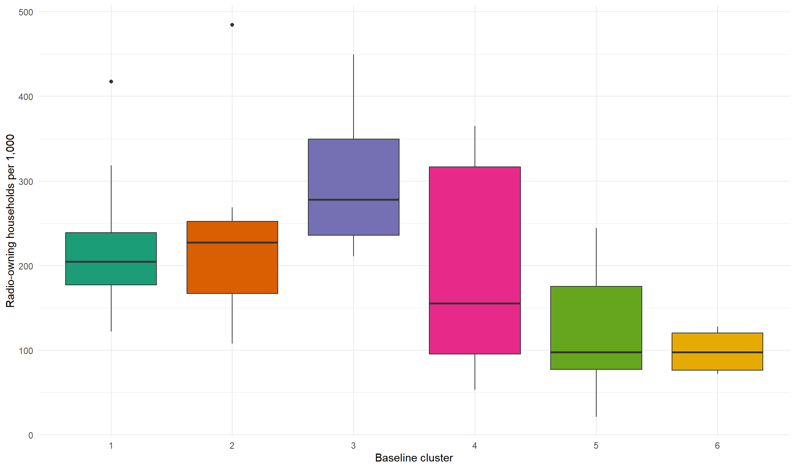
The parallel-coordinate plots show how the five rates vary together within each baseline group. The chapter’s globalminmax option keeps the original rates and gives all five axes a common range. The interactive heatmap, in comparison, scales each variable separately between zero and one.
profile_data <- st_drop_geometry(shan_sf_ngeo_cluster) %>%
select(CLUSTER, all_of(features)) %>% as.data.frame()
ggparcoord(profile_data, columns = match(features, names(profile_data)),
groupColumn = 1, scale = "globalminmax", alphaLines = 0.2,
boxplot = TRUE, showPoints = FALSE) +
facet_wrap(~ CLUSTER, ncol = 3) +
scale_colour_manual(values = cluster_colours, guide = "none") +
scale_x_discrete(labels = rate_labels[features]) +
labs(x = NULL, y = "Households per 1,000 (common scale)") +
theme(axis.text.x = element_text(angle = 35, hjust = 1))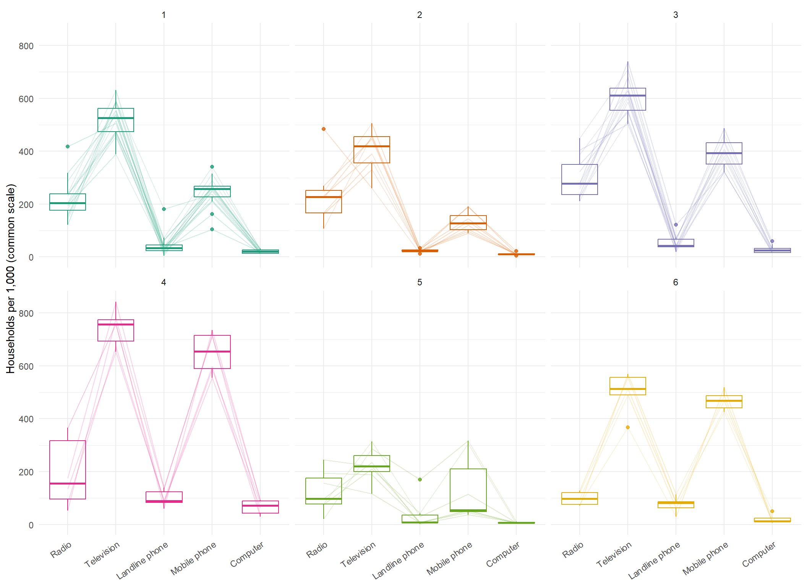
Finally, I plot the group means in the original units. Separate vertical scales make differences in the less common forms of access visible without changing their reported values.
cluster_means <- profile_data %>%
group_by(CLUSTER) %>% summarise(across(all_of(features), mean), .groups = "drop")
cluster_means %>%
pivot_longer(all_of(features), names_to = "Indicator", values_to = "Mean") %>%
ggplot(aes(CLUSTER, Mean, colour = CLUSTER)) +
geom_point(size = 3) +
facet_wrap(~ factor(Indicator, levels = features), ncol = 3, scales = "free_y",
labeller = as_labeller(rate_labels)) +
scale_colour_manual(values = cluster_colours, guide = "none") +
labs(x = "Baseline cluster", y = "Mean households per 1,000")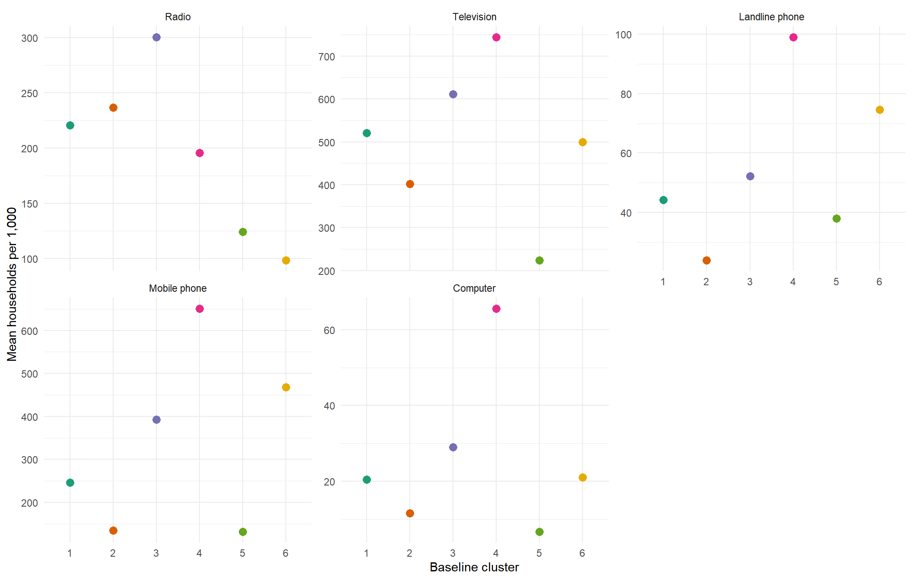
Baseline group 4 has the highest average television, mobile-phone and computer penetration. Radio ownership is highest in group 3, so the groups do not follow the same ranking for every form of ICT access.
The three clustering approaches answer related questions: the hierarchical models group ICT profiles, SKATER requires connected regions, and ClustGeo allows a gradual trade-off between ICT similarity and geographical cohesion. The results describe the supplied 2014 census indicators and should not be read as current ICT access levels.